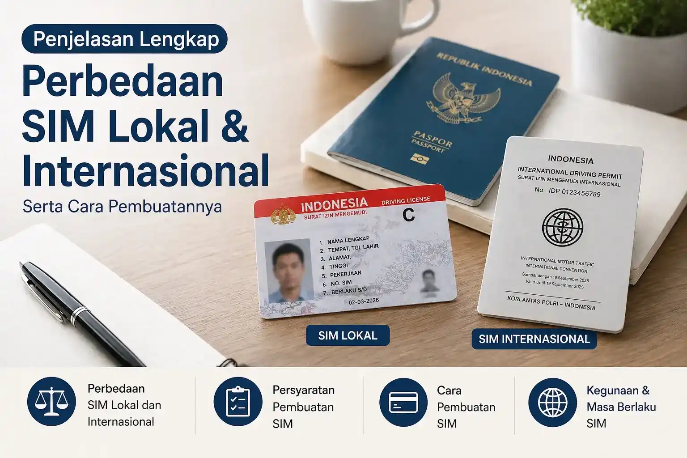

Ingin memahami perbedaan SIM lokal dan internasional dengan penjelasan yang lebih jelas, terarah, dan mudah dipahami?
Bagi Anda yang sering bepergian atau berencana berkendara di luar negeri, memahami jenis SIM yang tepat menjadi hal penting. Banyak orang masih bingung mengenai perbedaan SIM lokal dan SIM internasional, termasuk fungsi, syarat, serta proses pembuatannya. Dengan pemahaman yang tepat, Anda dapat menyesuaikan kebutuhan berkendara baik di dalam maupun luar negeri dengan lebih terarah.

SIM lokal adalah Surat Izin Mengemudi yang diterbitkan oleh kepolisian dan berlaku di wilayah Indonesia. SIM ini menjadi bukti legal bahwa seseorang telah memenuhi syarat untuk mengemudikan kendaraan tertentu.
SIM internasional adalah dokumen resmi yang memungkinkan pemiliknya mengemudi di luar negeri. Dokumen ini biasanya diperlukan saat Anda menyewa kendaraan atau berkendara di negara lain.
SIM internasional berfungsi sebagai pelengkap dari SIM lokal dan digunakan sesuai ketentuan negara tujuan.
| Aspek | SIM Lokal | SIM Internasional |
|---|---|---|
| Wilayah | Indonesia | Luar negeri |
| Fungsi | Izin berkendara domestik | Izin berkendara internasional |
| Syarat | Ujian & administrasi | Harus punya SIM lokal |
Mengemudi di luar negeri tanpa dokumen yang sesuai dapat menimbulkan kendala, terutama terkait aturan lalu lintas di negara tujuan.
| Wilayah | Keyword SEO |
|---|---|
| Denpasar Selatan | SIM internasional Denpasar Selatan |
| Kuta | SIM internasional Kuta |
| Canggu | SIM internasional Canggu |
| Ubud | SIM internasional Ubud |
| Sanur | SIM internasional Sanur |
Untuk proses yang lebih mudah dipahami, Anda dapat menggunakan layanan dari Rizch Service yang membantu pengurusan SIM internasional dengan lebih terstruktur.
Pendampingan yang tepat membantu Anda memahami alur dengan lebih jelas sehingga proses dapat berjalan lebih lancar.
Ya, SIM lokal aktif menjadi syarat utama.
Tergantung kelengkapan dokumen dan prosedur.
Tergantung kebijakan negara tujuan.
Bisa, dengan pendampingan proses menjadi lebih mudah dipahami.
← Lihat Artikel Lainnya Konsultasi Gratis